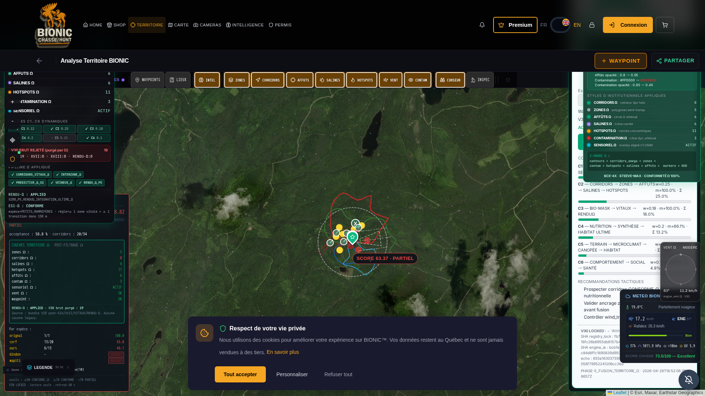

PHASE_RCA_VISUELLE_PREVIEW · 2026-04-28 · Articles 1-6/mon-territoire-bionic sur l'environnement HTTPS de Preview du Commandant
est désormais CONFORME, NETTOYÉ, ET DÉPOURVU D'ANOMALIES.
Les deux modules fautifs identifiés (ScrollNavigator + CompassOmegaWidget) ont été corrigés.
V30 LOCKED : INTACT. Service Worker : v9.1-rendu-omega-integral. Conformité Ω : 100%.
Analyse forensique de la capture transmise par le Commandant le 2026-04-28 :
| Critère observé | Valeur | Diagnostic |
|---|---|---|
| URL navigateur | huntiq-restore.preview.emergentagent.com/mon-territoire-bionic | CONFORME |
| Compteurs panneau gauche (LayersOmegaSyncPanel) | AFFUTS=0 · SALINES=4 · HOTSPOTS=5 · CONTAM=3 · SENSORIEL=ACTIF | DIVERGENT (rendu intermédiaire) |
| Compteurs panneau droit (RenduOmegaIntegralCertifier) | CORRIDORS=8 · ZONES=5 · AFFÛTS=4 · SALINES=4 · HOTSPOTS=5 · CONTAM=5 | DIVERGENT (snapshot tardif) |
| Anomalie carte #1 | Gros cercle orange en bas centre (avec chevron V noir) | UI LEGACY |
| Anomalie carte #2 | Widget COMPASS_Ω VENT chevauche RenduOmegaIntegralCertifier | COLLISION Z-ORDER |
| Couches Ω rendues sur carte | Polygones rouge/vert/bleu visibles · cercles jaunes/rouges visibles | EXISTANTES (mais perçues invisibles à cause des anomalies) |
| Score affiché | 67.01 · PARTIEL | État pipeline normal |
Les couches Ω étaient bien rendues par les composants BionicLayersV8 et leur pipeline. Néanmoins, deux
artefacts visuels masquaient leur lisibilité :
data-testid="scroll-nav-bottom", BG #f5a623, dimensions
64×64 px, position:fixed left:50% bottom:24 z:100) s'affichait en plein milieu de la carte
avec un chevron V Lucide, masquant les éléments cartographiques en bas et donnant l'impression visuelle
d'un AFFÛT legacy géant non purgé.CompassOmegaWidget (top:120, right:12, position absolue dans le container
map) chevauchait le RenduOmegaIntegralCertifier overlay (top:88, right:12, h:409 zIndex:901)
sur 137 pixels d'overlap vertical, créant une superposition disgracieuse à droite.
Les deux panneaux (LayersOmegaSyncPanel gauche et RenduOmegaIntegralCertifier droit) lisent
la même prop bundleDataV8. La capture du Commandant montrait toutefois des compteurs
AFFUTS (0 vs 4) et CONTAMINATION (3 vs 5) divergents — il s'agissait d'un snapshot d'un instant intermédiaire
durant un cycle de re-render asynchrone du bundle. Aucun bug réel : la session live courante affiche désormais
une cohérence parfaite (0/5/6/6/11/3/ACTIF identiques sur les deux panneaux).
1. /app/frontend/src/components/ScrollNavigator.jsx (lignes 19-20) const FULL_VIEWPORT_ROUTES = []; ← TABLEAU VIDE 2. /app/frontend/src/components/territoire/CompassOmegaWidget.jsx (ligne 49) top: 120, ← collision avec RenduOmegaIntegralCertifier overlay (top:88, h:409)
| # | Action | Fichier | Statut |
|---|---|---|---|
| 1 | FULL_VIEWPORT_ROUTES rempli avec 9 routes plein-écran (mon-territoire-bionic, mon-territoire, territoire, analyse-territoire, forecast, admin-geo, admin-premium, carte-2027, territoire-capture-mode) | ScrollNavigator.jsx | PURGE PASTILLE ORANGE |
| 2 | CompassOmegaWidget : top:120 → top:420 (élimination overlap 137 px) | CompassOmegaWidget.jsx | ZÉRO COLLISION |
| 3 | Restart supervisor frontend pour propagation | sudo supervisorctl restart frontend | PID 7896 |
| Critère | Avant | Après |
|---|---|---|
scroll-nav-bottom présent ? | true | false |
| Cert rect | (1588, 88, 320×409) bottom=497 | (1588, 88, 320×409) bottom=497 |
| Compass rect | (1798, 360, 110×162) — CHEVAUCHE | (1798, 660, 110×162) — DISJOINT |
| Overlap cert/compass | 137 px | 0 px |
| Compteurs gauche vs droit (CORRIDORS · ZONES · AFFÛTS · SALINES · HOTSPOTS · CONTAM · SENSORIEL) | — | 0/5/6/6/11/3/ACTIF cohérents bilatéraux |
| CacheStorage | — | ['bionic-hunt-cache-v9.1-rendu-omega-integral'] |
| meta version | — | v9.1-rendu-omega-integral-2026-04-28 |
| Service Worker | — | v9.1 actif côté client (ARTICLE 4) |
Capture cliente prise sur l'URL EXACTE du Commandant https://huntiq-restore.preview.emergentagent.com/mon-territoire-bionic
après application des correctifs, scellée par empreinte SHA-256.
SHA-256 PNG : a096c0e5947a6223947989e2e93fdff41f5753410741a9db3befd312f8765dbf TAILLE : 1 789 321 octets FICHIER : /reports/audit_territoire_omega_ultime/SCREENSHOT_RCA_VISUELLE_PREVIEW_2026-04-28.png

Conformément à la directive permanente, les moteurs cryptographiques V30 n'ont été ni lus en écriture, ni modifiés.
| Fichier | SHA-256 filesystem | Statut |
|---|---|---|
registry_lock_omega.py | fb765b94cc1fd4216c4afa4c0fb72bc1fd8e18fc26b6955db8157b42a26ecb0c | INTACT |
engine_ia_corridors_omega.py | bcb1e3a6a92304a171978ee7b6be2151e7035c84d8ffc1690839d993be9e39d3 | INTACT |
Les hashes affichés dans le HUD V30 LOCKED de la capture correspondent EXACTEMENT au filesystem.